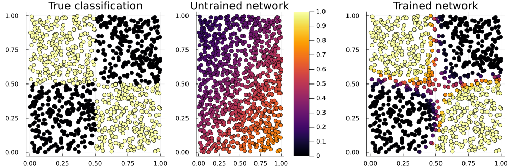

A Neural Network in One Minute
If you have used neural networks before, then this simple example might be helpful for seeing how the major parts of Flux work together. Try pasting the code into the REPL prompt.
If you haven't, then you might prefer the Fitting a Straight Line page.
# With Julia 1.7+, this will prompt if neccessary to install everything, including CUDA:
using Flux, Statistics, ProgressMeter
# Generate some data for the XOR problem: vectors of length 2, as columns of a matrix:
noisy = rand(Float32, 2, 1000) # 2×1000 Matrix{Float32}
truth = [xor(col[1]>0.5, col[2]>0.5) for col in eachcol(noisy)] # 1000-element Vector{Bool}
# Define our model, a multi-layer perceptron with one hidden layer of size 3:
model = Chain(
Dense(2 => 3, tanh), # activation function inside layer
BatchNorm(3),
Dense(3 => 2),
softmax) |> gpu # move model to GPU, if available
# The model encapsulates parameters, randomly initialised. Its initial output is:
out1 = model(noisy |> gpu) |> cpu # 2×1000 Matrix{Float32}
# To train the model, we use batches of 64 samples, and one-hot encoding:
target = Flux.onehotbatch(truth, [true, false]) # 2×1000 OneHotMatrix
loader = Flux.DataLoader((noisy, target) |> gpu, batchsize=64, shuffle=true);
# 16-element DataLoader with first element: (2×64 Matrix{Float32}, 2×64 OneHotMatrix)
pars = Flux.params(model) # contains references to arrays in model
opt = Flux.Adam(0.01) # will store optimiser momentum, etc.
# Training loop, using the whole data set 1000 times:
losses = []
@showprogress for epoch in 1:1_000
for (x, y) in loader
loss, grad = Flux.withgradient(pars) do
# Evaluate model and loss inside gradient context:
y_hat = model(x)
Flux.crossentropy(y_hat, y)
end
Flux.update!(opt, pars, grad)
push!(losses, loss) # logging, outside gradient context
end
end
pars # parameters, momenta and output have all changed
opt
out2 = model(noisy |> gpu) |> cpu # first row is prob. of true, second row p(false)
mean((out2[1,:] .> 0.5) .== truth) # accuracy 94% so far!
using Plots # to draw the above figure
p_true = scatter(noisy[1,:], noisy[2,:], zcolor=truth, title="True classification", legend=false)
p_raw = scatter(noisy[1,:], noisy[2,:], zcolor=out1[1,:], title="Untrained network", label="", clims=(0,1))
p_done = scatter(noisy[1,:], noisy[2,:], zcolor=out2[1,:], title="Trained network", legend=false)
plot(p_true, p_raw, p_done, layout=(1,3), size=(1000,330))
Here's the loss during training:
plot(losses; xaxis=(:log10, "iteration"),
yaxis="loss", label="per batch")
n = length(loader)
plot!(n:n:length(losses), mean.(Iterators.partition(losses, n)),
label="epoch mean", dpi=200)This XOR ("exclusive or") problem is a variant of the famous one which drove Minsky and Papert to invent deep neural networks in 1969. For small values of "deep" – this has one hidden layer, while earlier perceptrons had none. (What they call a hidden layer, Flux calls the output of the first layer, model[1](noisy).)
Since then things have developed a little.
Features to Note
Some things to notice in this example are:
The batch dimension of data is always the last one. Thus a
2×1000 Matrixis a thousand observations, each a column of length 2. Flux defaults toFloat32, but most of Julia toFloat64.The
modelcan be called like a function,y = model(x). Each layer likeDenseis an ordinarystruct, which encapsulates some arrays of parameters (and possibly other state, as forBatchNorm).But the model does not contain the loss function, nor the optimisation rule. The
Adamobject stores between iterations the momenta it needs. AndFlux.crossentropyis an ordinary function.The
doblock creates an anonymous function, as the first argument ofgradient. Anything executed within this is differentiated.
Instead of calling gradient and update! separately, there is a convenience function train!. If we didn't want anything extra (like logging the loss), we could replace the training loop with the following:
for epoch in 1:1_000
train!(pars, loader, opt) do x, y
y_hat = model(x)
Flux.crossentropy(y_hat, y)
end
end